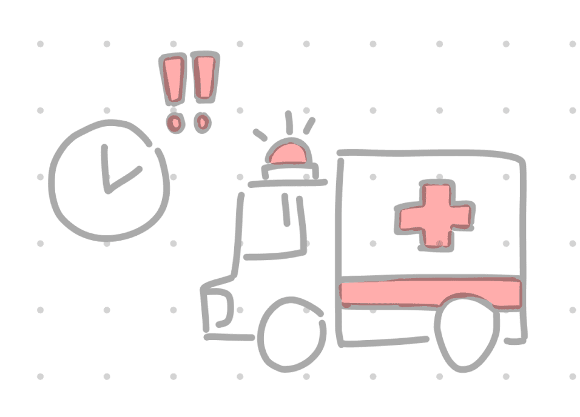
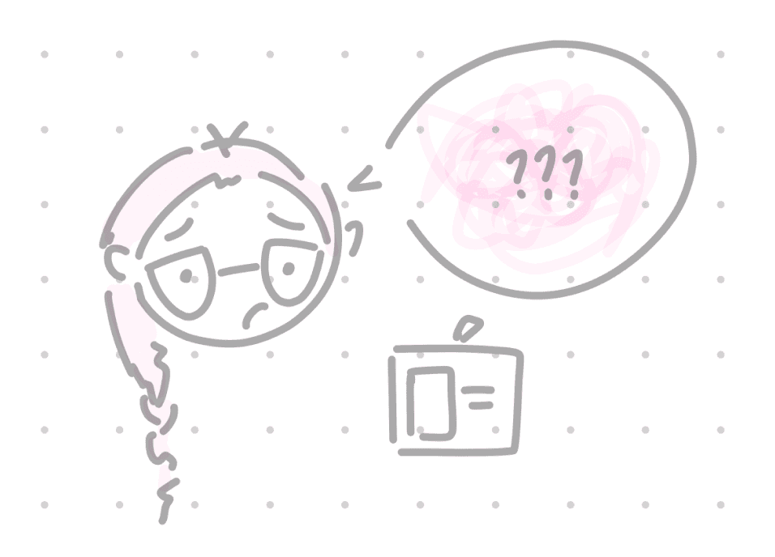
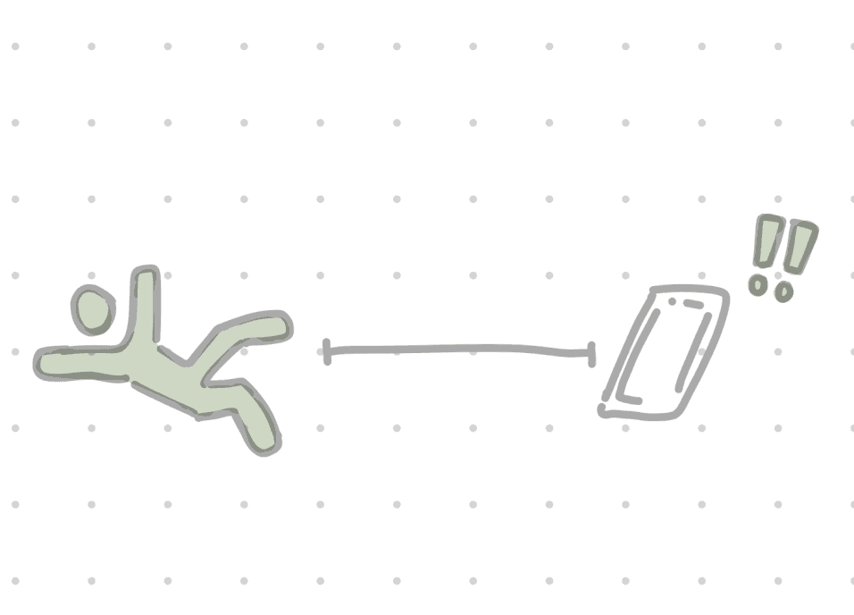
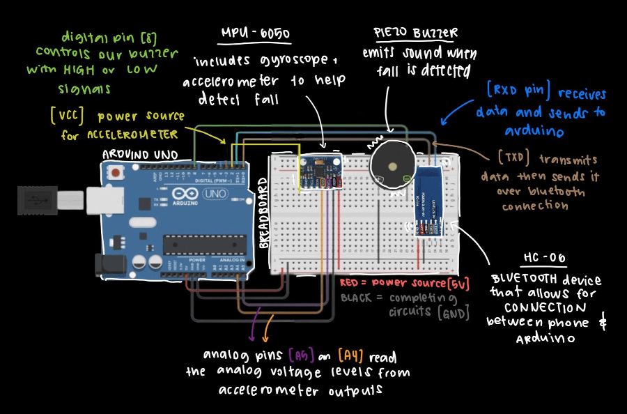
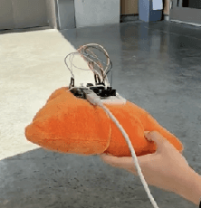

BELEAF
[CONTEXT]
A fall-detection wearable and companion app, built to give seniors immediate help and families peace
Falls are one of the most common safety risks for seniors. For people living independently, the danger isn’t just the fall, it’s the silence afterward. BELEAF pairs a physical wearable with a mobile alert app so that when a fall happens, help gets notified automatically, without anyone needing to reach for a phone.
[WHY I BUILT THIS]
This project started with my grandmother
She fell in her backyard, and in that gap — before anyone knew, before anyone could help — is exactly where people get hurt worst. I wanted to know: could technology close that gap, without making her feel monitored or fragile in the process?
[PROBLEM]
Grounding the problem in real experiences
I interviewed 6 caregivers and family members about how they currently support senior safety, and where it breaks down.

Emergency support arrives too late
Safety systems feel clinical or intrusive

Caregivers struggle with uncertainty

Response delayed if phone isn’t nearby
So people avoid using them, which defeats the purpose.
[IDEATION]
Building the embedded system
We wired and tested our 3 components separately before integrating: an MPU-6050 (accelerometer + gyroscope), a piezo buzzer, and an HC-06 Bluetooth module. Once sensor and actuator worked independently, we had our MVP.
COMPONENT SELECTION
MPU-6050 (accelerometer + gyroscope) — reads motion/orientation
Piezo buzzer — alarm that plays a local, immediate alert
HC-06 Bluetooth — link to the alert app

Circuit diagram
DETECTION LOGIC
The device reads accelerometer/gyroscope data continuously. Detection runs on 3 triggers evaluated from the amplitude vector — only when all three activate, in order, does the system register a fall, sound the buzzer, and hand off to Python to send the alert via SMTP.
Try our logic out! →
{{simStatus}}
WHY THE SAFETY MEASURES?
Every false alarm erodes trust in the device. So the extra complexity in the detection logic directly answers the same problem the interviews surfaced: people abandon safety tools that feel unreliable or intrusive.
Building the emergency alert app
A simple MIT App Inventor app to pair over Bluetooth and register an emergency contact, plus a lightweight Figma exploration of a fuller product experience. Kept intentionally secondary — the app exists to deliver what the hardware detects, not the other way around.
Try it out!
Video demoing MIT App Inventor
Designing the UI interface with simplicity in mind
The UI for beleaf was designed to reflect the same core values as the physical device: clarity, speed, and emotional comfort. Since the product supports users in high-stress moments, every decision, from typography to layout, focused on reducing friction and promoting trust.

DEBUGGING AND ITERATION
Bluetooth Instability
A problem we frequently ran into was the HC-06 constantly dropping connection. This resulted in our messages not getting through
Sensor Misfires
The fall sensor also kept making mistakes at first, so we had to test it again and again until it worked right.
[SOLUTION]
18 out of 20 in our cohort wanted this for everyday, on-demand support
No waiting or searching for a phone: the device detects falls automatically and alerts emergency contacts, while the companion app allows users to send help with a single tap. The core problem is solved at the hardware layer, not patched over with a better button.


[IMPACT]
Metrics
18 out of 20 in our cohort wanted this for everyday, on-demand support

Takeaways
Importance of research and setting clear goals early so we can keep our scope focused
Next Steps
Test with real older adults for actual human movement and the UI for accessbility